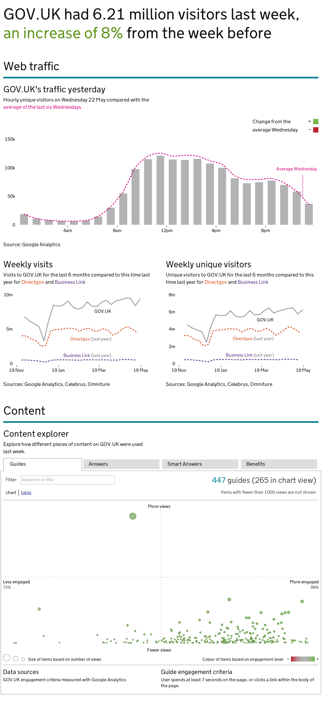

---
---

  {% assign active_tab = "gov.uk dashboard" %}
  {% include performance-platform-nav/_alpha-beta-head.html %}

  <link rel="stylesheet" href="header.css">
  <link rel="stylesheet" href="alpha-beta.css">

  <body class="mainstream full-width">
    <script type="text/javascript">document.body.className = ((document.body.className) ? document.body.className + ' js-enabled' : 'js-enabled');</script>

    <a href="#content" class="visuallyhidden">Skip to main content</a>

    {% include performance-platform-nav/_alpha-nav-header.html %}

    <div id="wrapper" class="service">

      <section id="content" role="main" class="group platform">

        <header class="page-header group">
          <!-- <hgroup><h1><span></span>GOV.UK dashboard</h1></hgroup> -->
        </header>

        <div class="article-container group">
          <article role="article" class="group">
            <div class="inner">
              
              </div>
          </article>
        </div>
      </section>
    </div>
    <!--end wrapper-->

    {% include _footer.html %}
  </body>
</html>